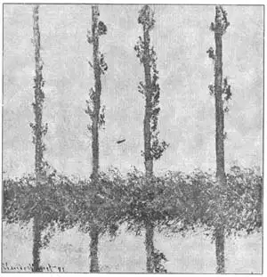
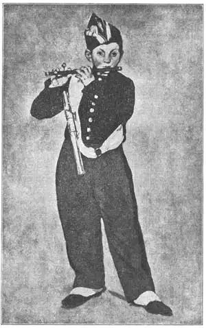

26
THE MOST IMPORTANT PERSON
最重要的角色

AND now I’m going to have to blindfold you. I won’t ask you to look at some pictures blindfolded. You can enjoy music that way, but hardly pictures. But let’s suppose you really are blindfolded. I’m going to guide you, blindfolded as you are, out to a field this morning. I’m going to stand you so you are facing a haystack and then I’m going to take the handkerchief off your eyes and let you look at the haystack for five minutes. Then I’ll blindfold you again and lead you back. It’s a queer kind of a game, isn’t it? Something like blindman’s-buff.
Let’s play it once more. The first time when you looked at the haystack it was ten o’clock in the morning. This time I’ll let you look at the same haystack for five minutes about five o’clock in the afternoon. And this time the haystack will look quite different from the way it looked at ten. It’s the same shape, but the colors and light and shadows are all so different that the five o’clock haystack makes a picture to your eye very different from the ten o’clock haystack. Every little while during the day the haystack changes in color and brightness. That’s why I let you look at it for only five minutes at a time—so the light would not change and give your eye another picture.
Now, I’m sure you can see that if an artist painted a picture of the haystack for every hour of the day he would have many pictures of the same haystack, but each picture would be different from all the others.
That is just what some French artists did not so many years ago. Then they gave an exhibition of their work. They hung their paintings on the walls of a room so that people could come and see them. The people who came found these paintings were very different from any they had ever seen before. The pictures were like your quick view of the haystack. They showed the colors and light that the artists had seen in quick views of the things they were painting. These views were called impressions. And so the painters soon got the name of Impressionists.
Earlier painters never thought of doing such a thing. They painted a horse one color and a haystack another, no matter whether the light always made them look that color or not. Really a black horse or a yellow haystack is not always black or yellow. The color depends on the light. The light shining on a black horse may make him look blue in places. But you know so well that a horse isn’t blue that you don’t notice how blue he really may look in certain lights!
Painters always used to paint shadows brown or gray or black. But if you look carefully at a real shadow it is often not brown or gray or black at all. It’s just as apt to be green or blue or purple or some other color.
Of course bright light and color on an object out of doors was always hard to paint, because paints are not nearly so bright as light. But if you remember what I told you about the painter Constable, you will see how these Impressionist artists made their colors look bright and like sunlight. They put the colors on in little dots and dashes. Putting colors on in dots and dashes of separate colors does really make them look brighter. They almost seem to shimmer like real sunlight. But it also makes the pictures look quite different from the older kind of painting.
For this reason the people who saw the French exhibition of the Impressionists weren’t very much pleased. These people had been used to one kind of painting, and the change was so great that they couldn’t like the new kind nearly as well at first.

No.26-1 THE POPLARS （《白杨树》）MONET （莫奈 作）
Courtesy of The Metropolitan Museum of Art
But after a while the Impressionists came to be understood better. People saw that they were trying out a new way of painting and that what they were doing might be very worth while. One of the Impressionists named Claude Monet (Mo-nay) used to go out with a carriage full of canvases and spend all day painting the same scene. He used a different canvas each time the light changed the color and appearance of the thing he was painting.
For instance, Monet painted fifteen pictures of the same haystacks and in each one had a different color and light effect. He painted twenty pictures of the front of a French cathedral as it was seen at different times of day, and each picture was different. They make an interesting series, but when you see one of these pictures by itself you are apt to be a little disappointed because the forms, or the shapes, in the painting are not so important as you think they should be. Monet was interested in the light and color, not especially in the form or shape.
Another Impressionist had a name much like Monet. His name was Manet (Manay). In fact, Manet was the painter who really started the Impressionists. Manet didn’t break his pictures up into so many little glittering spots as Monet did. Indeed, it was only in the last ten years of his life that Manet used that kind of painting very much. Some one asked Manet once who the chief person was in one of his Impressionist pictures.

No.26-2 THE FIFER（吹短笛的男孩）MANET（马奈 作）
Photograph by Brown Brothers
“The most important person in any picture,” Manet answered, “is the light.” And that was what the Impressionists tried to show in their paintings.
Here is one of Manet’s pictures called “The Fifer.” Probably you will like it better than Monet’s “The Poplars” because people are generally more interesting than things, even if light is “the most important person” in a painting.
【中文阅读】
现在，我要把你的眼睛蒙起来。我不会让你蒙着眼睛看图画。让你蒙着眼睛听音乐没问题，但要看图画就不行了。不过，让我们假设一下今天早上你真的被蒙了眼，由我领你出门走到田野。我让你面朝一个草堆站着，然后把你眼睛上的手帕摘下，让你对着这个草堆看五分钟。接着，我再把你眼睛蒙上，带你返回。这个游戏奇怪吗？有点像捉迷藏。
让我们再玩一次这个游戏吧。你第一次看见草堆是早上十点，然后，我让你在下午五点左右对同一个草堆再看一次，也只看五分钟。你会发现，现在看到的草堆和上午十点看的大不相同了。尽管草堆的形状没有变，可草堆早晚的颜色、亮度和阴影却完全不同了，所以，同一个草堆在上午十点和下午五点时呈现出的画面完全不同。实际上，一天中每隔一小会儿，草堆的颜色和亮度都会发生变化。这就是为什么我每次只让你看五分钟——因为亮度还没发生变化，你眼睛所见的还是原来那幅画面。
现在我相信你能明白，如果一个画家一天中每隔一小时给干草堆画一幅画，那么他就可以给同一堆干草画出许多幅画，而每幅画都会有所不同。
近几年来的一些法国画家正是这么做的。他们给自己的作品举行了一次展览。他们把自己的画挂在展厅的墙上，供人们进来观赏。来参观的人发现，这批画与以往他们看到的画很不一样。这些画就像你对草堆快速一瞥后看到的样子。它们向我们展示了画家们快速观察所画对象时看到的颜色和光线。这种观察叫做“印象”，所以这批画家很快也就被称为“印象派画家”了。
早期的画家从来没有想过这样做。他们总是把马画成一种颜色，干草堆画成另一种颜色，而不管光线下它们是否真的显示那种颜色。事实上，黑马或黄草堆并不总是呈现黑色和黄色。事物的颜色取决于周围环境的光线。一匹黑马在某些地方的光线照射下看起来可能是蓝色的。但你很清楚马不是蓝色的，所以你根本不会留意到在某些光线下马可能看起来真的是蓝色。
画家们过去总是把影子画成褐色、灰色或黑色。不过，如果你仔细观察真正的影子，你会发现，它经常根本就不是褐色、灰色或者黑色。影子常常会呈现出绿色、蓝色、紫色或一些其他颜色。
当然，室外一件物体上明亮的光线和色彩是很难画出来的，因为颜料的颜色并没有自然光线那么明亮。但是，如果你们还记得我曾向你们介绍过康斯太勃尔的话，那 就会了解这些印象派画家是怎样使他们绘画的色彩看起来像真的太阳光那样明亮了。他们把颜料涂成一个个小的色块。把颜料弄成各种颜色的色块的确使画面看起来更明亮一些。这些色彩看起来几乎像真正的太阳光那样闪亮。不过，这种方法使画看起来跟传统的画大相径庭。
正因为这个原因，那些参观过法国印象派画家画展的人们并不是很满意。那些人已经习惯了传统的绘画方式，而这种改变实在是太大，所以一上来就无法接受这种新的绘画方式。
过一段时间后，人们开始对印象派画家有了更多了解。人们发现，这些印象派画家正在尝试一种新的绘画方式，而且他们所做的尝试可能很有价值。有一个印象派画家叫克劳德·莫奈。他过去经常坐马车外出，车上装满了画布，而且他花上一整天就画同一个场景。每当光线改变他笔下物体的颜色和面貌时，他就会换一块画布来画。
例如，莫奈曾对同一个草堆画了十五幅画，每幅画色彩和光线的效果都不一样。他曾在一天中的不同时段为法国一座大教堂的正面画了一共二十幅画，每幅画看起来都有所不同。这批画组成了一个非常有趣的系列。但是，如果单独看其中一幅的话，你可能会有点失望，因为画中物体的形式（或形状）看起来好像没你想象中的那么重要。莫奈对光线和颜色感兴趣，而对形式或形状却不以为然。
另外还有一位印象派画家，他的名字和莫奈非常相似，叫马奈。事实上，马奈是印象主义画派的真正创始人。马奈不像莫奈那样把画面分割成许多闪亮的小点。实际上，他在生命的最后十年才开始频繁地使用那种绘画方式。有人曾经问马奈，他印象派画中的主角到底是谁。
马奈回答说：“在任何一幅画中最重要的角色都是光线。”这也正是印象派画家试图在他们的绘画中所展现的。
马奈有幅画名叫《吹短笛的男孩》。拿它和莫奈的《白杨树》相比，你可能更喜欢这幅画。因为尽管光线是一幅画中“最重要的角色”，但通常人比物更有吸引力。